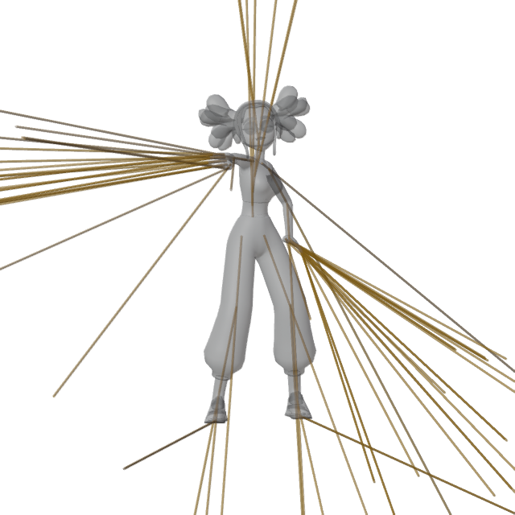

Golden Frames


2026-10-13（臺北時間） · ODA Blender 5.2 · 65 骨 · 真實蒙皮 · 18.25 秒循環動作

拓撲、零未綁定頂點、原生變形比對、GLB 重載、影片全片解碼通過。完整連續視覺／Godot 引擎一致性仍待驗收。末 24 幀加入循環銜接；影片採 Workbench 貼圖模式。
驗收 JSON · GLB 重載 JSONGit Commit: d619c28e9a1a5ba4edbc110984b933492845f6a7
來源：SceneX ODA 既有 Michelle 資料（upstream three.js Michelle／Mixamo）；本頁記錄來源，授權資訊仍待逐項對照。